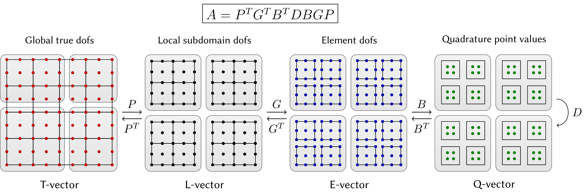

HowTo: Use partial assembly and matrix-free assembly
MFEM provides different levels of assembly for mfem::BilinearForm,
mfem::MixedBilinearForm, mfem::DiscreteLinearOperator, and
mfem::NonlinearForm based on the operator decomposition:

These different levels of assembly are:
- LEGACY, in the case of a
mfem::BilinearFormLEGACY corresponds to a fully assembled form, i.e. a global sparse matrix in MFEM, Hypre or PETSC format. In the case of amfem::NonlinearFormLEGACY corresponds to an operator that is fully evaluated on the fly. The LEGACY assembly level is ALWAYS performed on the host. - FULL, fully assembled form, i.e. a global sparse matrix in MFEM format. This assembly is compatible with device execution, and therefore the sparse matrix is assembled on device if available. This corresponds to storing the whole A = GT BT D B G operator as a sparse matrix.
- ELEMENT, Form assembled at element level, which computes and stores dense element matrices. This corresponds to storing the element-local dense matrices AE = BT D B. This format allows to have some access to the matrix entries, while also providing a data format that is more friendly with GPU architectures.
- PARTIAL, Partially-assembled form, which computes and stores data only at quadrature points. This corresponds to storing only quadrature points values D, this format results in significantly faster computations and less storage usage compared to format storing matrices. Only the diagonal entries of the operator are accessible.
- NONE, "Matrix-free" form that computes all of its action on-the-fly without any substantial storage. In this case D is computed on the fly, this format is also significantly faster than the matrix formats, but is currently slower than partial assembly due to the increased number of computations. However, in the case of operators that need to be reassembled frequently this assembly level might be faster than partial assembly by skipping any reassembly steps.
The different assembly levels are accessed through the following unified interface:
AssemblyLevel assembly_level = ...;
a->SetAssemblyLevel(assembly_level);
where a is either an mfem::BilinearForm, mfem::MixedBilinearForm,
mfem::DiscreteLinearOperator, or mfem::NonlinearForm.
Assembly levels and backend device configuration
MFEM integrates three backends that interact with the assembly levels, namely the RAJA backend, the OCCA backend, and the libCEED backend.
Backends are accessible by configuring the mfem::Device accordingly.
| Device Configuration | |
|---|---|
cpu |
Default CPU backend: sequential execution on each MPI rank. |
omp |
OpenMP backend. Enabled when MFEM_USE_OPENMP = YES. |
cuda |
CUDA backend. Enabled when MFEM_USE_CUDA = YES. |
hip |
HIP backend. Enabled when MFEM_USE_HIP = YES. |
raja-cpu |
RAJA CPU backend: sequential execution on each MPI rank. Enabled when MFEM_USE_RAJA = YES. |
raja-omp |
RAJA OpenMP backend. Enabled when MFEM_USE_RAJA = YES and MFEM_USE_OPENMP = YES. |
raja-cuda |
RAJA CUDA backend. Enabled when MFEM_USE_RAJA = YES and MFEM_USE_CUDA = YES. |
raja-hip |
RAJA HIP backend. Enabled when MFEM_USE_RAJA = YES and MFEM_USE_HIP = YES. |
occa-cpu |
OCCA CPU backend: sequential execution on each MPI rank. Enabled when MFEM_USE_OCCA = YES. |
occa-omp |
OCCA OpenMP backend. Enabled when MFEM_USE_OCCA = YES. |
occa-cuda |
OCCA CUDA backend. Enabled when MFEM_USE_OCCA = YES and MFEM_USE_CUDA = YES. |
ceed-cpu |
CEED CPU backend. GPU backends can still be used, but with expensive memory transfers. Enabled when MFEM_USE_CEED = YES. |
ceed-cuda |
CEED CUDA backend working together with the CUDA backend. Enabled when MFEM_USE_CEED = YES and MFEM_USE_CUDA = YES. NOTE: The current default libCEED CUDA backend is non-deterministic! |
ceed-hip |
CEED HIP backend working together with the HIP backend. Enabled when MFEM_USE_CEED = YES and MFEM_USE_HIP = YES. |
debug |
Debug backend: host memory is READ/WRITE protected while a device is in use. It allows to test the "device" code-path (using separate host/device memory pools and host <-> device transfers) without any GPU hardware. As 'DEBUG' is sometimes used as a macro, _DEVICE has been added to avoid conflicts. |
It is also possible to request the backend of a backend, for instance if we want to use the /gpu/cuda/shared backend of libCEED one can specify this with the following syntax:
mfem::Device device("ceed-cuda:/gpu/cuda/shared");
The native MFEM backend and the RAJA backend support the same features and Integrators. However, the OCCA backend, and the libCEED backend each offer different features, and support different Integrators with different performance characteristics.
| Supported Integrators | native MFEM | OCCA backend | libCEED backend |
|---|---|---|---|
| Mass Integrator | ✅ | ✅ | ✅ |
| Vector Mass Integrator | ✅ | ❌ | ✅ |
| Vector FE Mass Integrator | ✅ | ❌ | ❌ |
| Convection Integrator | ✅ | ❌ | ✅ |
| Non-linear Convection Integrator | ✅ | ❌ | ✅ |
| Diffusion Integrator | ✅ | ✅ | ✅ |
| Vector Diffusion Integrator | ✅ | ❌ | ✅ |
| DGTrace Integrator | ✅ | ❌ | ❌ |
| Mixed Vector Gradient Integrator | ✅ | ❌ | ❌ |
| Mixed Vector Curl Integrator | ✅ | ❌ | ❌ |
| Mixed Vector Weak Curl Integrator | ✅ | ❌ | ❌ |
| Gradient Integrator | ✅ | ❌ | ❌ |
| Vector Divergence Integrator | ✅ | ❌ | ❌ |
| Vector FE Divergence Integrator | ✅ | ❌ | ❌ |
| Curl Curl Integrator | ✅ | ❌ | ❌ |
| Div Div Integrator | ✅ | ❌ | ❌ |
| Features | native MFEM | OCCA backend | libCEED backend |
|---|---|---|---|
| Tensor elements support | ✅ | ✅ | ✅ |
| Simplices support | ❌ | ❌ | ✅ |
| Mixed elements support | ❌ | ❌ | ❌ |
| Assembly: None | ❌ | ❌ | ✅ |
| Assembly: Partial | ✅ | ✅ | ✅ |
| Assembly: Element | ✅ | ❌ | ❌ |
| Assembly: Full | ✅ | ❌ | ❌ |